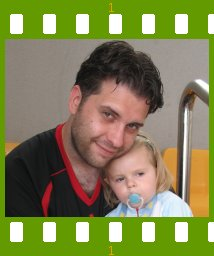
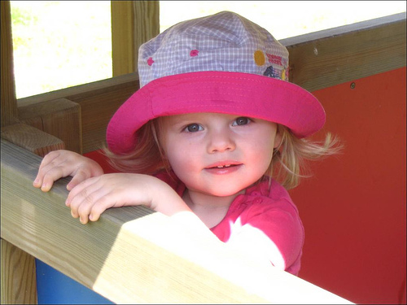

People of openSUSE: Pascal Bleser
- Nicknames: guru and yaloki
- Favorite season: Spring. But mostly because I like springframework.org ;)
- Motto: “have fun”

Please introduce yourself!
My name is Pascal Bleser, I’m 32 years old and live in Belgium. I’m living there with my girlfriend Ingrid and my little 2 year old daughter Gaelle. We currently don’t have pets, but I’m sure we’ll get a cat again soon.
My native languages are French and German, my English is quite fluent and I also babble a few words of Dutch.
I’m working as a software architect at Atos Worldline in Germany, where I’m part of a team of highly skilled software engineers, building top notch enterprise platforms around Java and JEE that are used in many mission critical applications (banking, telecom, …).
During my free time, I’m also part of the core organization team for one of the biggest and most appreciated open source and free software events in Europe: FOSDEM.
Tell us about the background to your computer use.
Being an IT professional and always passionate about computers, I’ve been using them since I’m 9 or 10. I’m using computers every day, both at work (from workstation PCs to big iron running Linux and other Unixsystems) and at home. I’m mostly programming, packaging, surfing, chatting…
When and why did you start using openSUSE/SUSE Linux?
I jumped on the S.u.S.E. bandwagon with version 5.0, which is quite old and that was in.. umm…1997 I think. Before that, I used Slackware and Redhat a little.
When did you join the openSUSE community and what made you do that?
At some point, when I was already using SUSE Linux, I got really interested in packaging RPMs. I started with mostly doing packages just for myself, for pieces of software that were not available as SUSE RPMs at that time. And, well, the next logical step was to start sharing those packages on the Internet, to make them available to all.
In what way do you participate in the openSUSE project?
As explained above, it’s quite a while I’m packaging RPMs for SUSE, and I suppose pretty much everyone knows my “guru” repository. It’s the 2nd largest package repository in the openSUSE community, after Packman. Note that I have lots of contact with the Packman team and that I should be merging with them some day, eventually. I use their Subversion infrastructure to commit packaging sources and developed most of their new website. I’m also listed as one of the most prolific packagers on PBone — the only individuals who score higher are fellow Belgians whom I know personally (Dries Verachtert and Dag Wieers).
Apart from that, I’m trying to contribute to discussions in and around the community on several openSUSE mailing-lists and spend most evenings helping and as an op on the #suse IRC channel as well as #opensuse-de, #opensuse-fr, and a few other opensuse channels over there.
I spend my remaining spare time working on the openSUSE Software Portal project that is still in its infancy but hopefully will be the über-killer web site for openSUSE users some day ;)
I also hacked a small but nice little tool called “webpin” that acts as a command-line frontend to Benjamin Weber‘s excellent openSUSE Package Search service.
And, well, other bits and pieces here and there.
What especially motivates you to participate in the openSUSE project?
Mainly two things: 1) the technical aspects/challenges; also, being an IT professional, trying out new and different things (RPM packaging, for example, is quite different from what I do at work) 2) while this may sound pathetic to some… I’m a strong believer in the opensource and free software movements: it’s really one of the very few things remaining in our sick world where people contribute their time, money and energy without getting much back. So, yeah, I also do it for the love of it and the people to whom my work may prove useful in a way or another ;)
Now, why specifically openSUSE… Well, I’m also involved in other opensource activities, such as organizing FOSDEM, contributing to Hudson, etc… but it’s a long time I’m using (open)SUSE Linux and it’s the Linux community where I’m at home. It just sort of happened ;)
What do you think was your most important contribution to the openSUSE project/community or what is the contribution that you’re most proud of?
That would definitely be my package repository.
When do you usually spend time on the openSUSE project?
In the evening and during week-ends, when my daughter is at sleep and my girlfriend not too angry because I’m sitting in front of my darn PC or laptop again ;)
Three words to describe openSUSE? Or make up a proper slogan!
I’ll just use two: technical excellence
Slogan: “openSUSE — take the green pill”
What do you think is missing or underrated in the distribution or the project?
From a technical point of view and being pretty much a Linux expert, I’m not missing much and can’t really comment on that, being able to fix things myself.
To me, what is mostly missing is communication between the various, somewhat isolated parts of our community. We do have excellent individuals and groups around (open)SUSE Linux, but for historical reasons (the distribution only opened up more widely 2 years ago with the launch of openSUSE), they are somewhat scattered and not talking much to each other.
That is really one of the things we should work on, which mostly requires time (communication is a tedious and time-consuming task) and soft skills.
What do you think the future holds for the openSUSE project?
On the technical side, the distribution has always been excellent and ahead of the others (at least in my opinion). As explained above, I think our future tasks will be mostly in and around the community, especially with regards to communication, connecting groups and individuals. I’d also love to see more cross-distribution efforts and friendly initiatives with Fedora or CentOS.
A person ask you why he/she should choose openSUSE instead of other distribution/OS. What would be your arguments to convince him/her to pick up openSUSE?
If that person has no experience with Linux, I’d recommend openSUSE because it’s polished, well tested, most stuff just works and because he’ll be able to use my package repository ;) And also because that’s the distribution I know best and where I could help him most with.
But if the person uses another Linux distribution (or even a BSD or Solaris), I wouldn’t try to convince him. Just use what suits you best… as long as it’s opensource ;) I’d tell him to give openSUSE a shot because I think it’s really, really good. If he likes it, great, if he prefers another distribution, that’s fine with me as well. Personally, I’m not hostile towards other Linux distributions (with the exception of Ubuntu guerilla marketing tactics and self-overbuzzing, which is very annoying and insulting to other distributions and communities).
Which members of the openSUSE community have you met in person?
Several people working on openSUSE in Nürnberg (Markus Rueckert, Henne Vogelsang, Stephan Binner, Adrian Schroeter, Duncan Mac-Vicar, Andreas Jaeger, Marcus Meissner, Martin Lasarsch, Michael Loeffler, mmj, just to name a few, but there were lots more ;) ).
I only met very few non-Novell openSUSE community members, namely Benjamin “benJIman” Weber, Francis “apokryphos” Giannaros, as well as Detlef Reichelt, Quentin Dennis, Herbert “herby” Graeber (all three are part of the Packman team), and Marc Schiffbauer. Marc prefers Debian but he provides the infrastructure for Packman, which is a very valuable contribution to our community ;)
How many icons are currently on your desktop?
29, but I have a dual screen-setup and I almost always use konsole, urxvt or alt+F2 to start applications ;)
What is the application you can’t live without? And why?
Hmmm.. hard to pick a single application. But I guess that would be a shell ;) Seriously, vim and emacs (I’m one of the very few who likes both).
Which application or feature should be invented as soon as possible?
An automated previous art checker to deny software patents.
Which is your preferred text editor? And why?
Both GNU Emacs and vim. Simply because they’re the best ;) Although for Java and PHP development (I’m doing Java development all day at work), I prefer and use Eclipse.
Which famous person would you want to join the openSUSE community?
Hmm… I can’t decide, either Linus Torvalds or Denise Richards ;)
Which computer related skills would you like to have?
I have them all ;)
The Internet crashes for a whole week. How would you feel, what would you do?
Ouch, that would hurt. Especially for not being in touch with the many people I chat, jabber and email with every day.
I’d just grab a few good books (I read pretty much all books by Stephen King and Tom Clancy) and get more sleep.
Which is your favorite movie scene?
Anything from Dogma, Seven or Matrix.
Star Trek or Star Wars?
I’m not that much of a fan of either, but I would pick Star Trek.
What is your favorite food and drink?
Being a true Belgian, my favourite food are the ill-named “french” fries with mayonnaise and a big steak. Although as a true hacker, I like pizza and pasta too. On the other hand, I’m also a fan of our local gastronomic specialties: venison (hind, wild piglets, rabbit, … all with that magic dark sauce made of prunes, red wine and such).
Favourite drink is obviously Belgian beer (Westvleeteren, Triepel Karmeliet, Kwak and Delirium Tremens).
Favorite game or console (in your childhood and nowadays)?
Favourite game: Enemy Territory. Favourite console: Playstation 2 (hopefully I’ll own a PS/3 some day ;) )
Which city would you like to visit?
Having already visited most of the many wonderful places in Croatia, I’d say Rome. But with a local, to avoid the tourist traps.
What is your preferred way to spend your vacation?
Sightseeing interesting and preferably ancient places, or beautiful natural environments. Which is why I’ve been to Croatia so often ;)
Someone gives you $1.000.000. What would you do with the money?
Bank it, earn interests, do my girlfriend and myself a few favours (more screens, more PCs ;) ) but mostly keep it for my daughter.
Hmmm.. that does sound boring though. OK, new laptop, bigger screens, a big iron workstation with lots of CPUs, and a sport car. Yeah, I’m human ;)
If traveling through time was possible, when would we be most likely to meet you?
Interesting question. Either right now, in a far away future (I’m so curious) or in the seventies.
There’s a thunderstorm outside. Do you turn off your computer?
Sometimes. But thunderstorms are not very frequent nor violent over here.
Have your ever missed an appointment because you forgot about it while sitting at your computer?
No, I use kalarmd ;)
Show us a picture of something, you have always wanted to share!

Isn’t my daughter lovely ? ;)
You couldn’t live without…
My daughter Gaelle, my girlfriend Ingrid, air, water, food, a computer running Linux, an internet connection. In that order.
Which question was the hardest to answer?
This one :)
What other question would you like to answer? And what would you answer?
“What’s the worst package you ever made ?” and the answer would be: “Miro/DemocracyPlayer” (what a pile of ….)